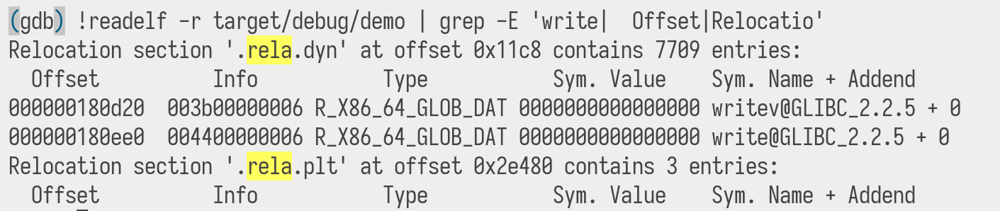

layout: true .siteLink[ <a href="https://jade.fyi/bangbangcon2021">jade.fyi/bangbangcon2021</a> ] --- class: middle .center[ # `pwintln!()`: teaching an ELF to uwu] .centering.firstslideCode[ ``` $ whoami Jade Fink twitter: @leftpaddotpy web: jade.fyi ```] --- # motivation .tweetbox[ <blockquote class="twitter-tweet"><p lang="en" dir="ltr">had an idea, turns out it's really hard to pull off though <a href="https://t.co/BZUtgPCCsP">pic.twitter.com/BZUtgPCCsP</a></p>— 💖 the6p4c 🦈 (@the6p4c) <a href="https://twitter.com/the6p4c/status/1329725624412381185?ref_src=twsrc%5Etfw">November 20, 2020</a></blockquote> <blockquote class="twitter-tweet" data-conversation="none"><p lang="en" dir="ltr">rust is too safe for these shenanigans and i'm mad</p>— 💖 the6p4c 🦈 (@the6p4c) <a href="https://twitter.com/the6p4c/status/1329726578968780800?ref_src=twsrc%5Etfw">November 20, 2020</a></blockquote> ] --- class: center, middle <img src="unsafe Corro.svg" class="fullscale"> --- layout: true .siteLink[ <a href="https://jade.fyi/bangbangcon2021">jade.fyi/bangbangcon2021</a> ] </div> --- # binary exploits? i remember something about calls to external libraries such as libc being indirect calls... time to write a simple program and play with `gdb`! --- video-fullscreen: https://jade.fyi/bangbangcon2021/demo1.mp4 --- # ok, but how would I find that address? --- # what's an elf anyway? * linux, BSD use it as an executable format * there are various sections in it that the executable loader loads into memory * specifies permissions of the regions within it (read, write, execute) * it allows for dynamic linking: you can call functions from files outside your executable --- # how do they do that dynamic linking thing anyway? * the dynamic loader gets to it before it's run * the libraries you use are loaded into memory with your program * the addresses of the functions your program uses get placed in requested locations, "relocations" --- # how can we read a relocation? `readelf(1)` --- video-fullscreen: https://jade.fyi/bangbangcon2021/demo2.mp4 --- # pwintwn! .centering[] --- # how would we do it "properly"? * it turns out you're not supposed to do this and run into several security mitigations: * layout randomization: hardcoding `0x555555554000` only works in the debugger * the relocations section we're overwriting is write protected ("RELRO") * error handling * thread safety * find the symbol ourselves --- # where to start on finding the symbol ourselves .centering[] --- .cursedcentering[] # a long time of `man 5 elf` and stack overflow later ??? shows the flow from getauxval(AT_PHDR), inspecting Elf64_Phdr records for type of PT_PHDR to get the offset between the auxval and the real program base, and for type PT_DYNAMIC to get the offset of the Elf64_Dyn table. The Dyn table then has its tags looked at to get the DT_RELA, DT_SYMTAB, and DT_STRTAB addresses. Elf64_Rela records are considered, their names used as indices in the symbol table, to look up a symbol record, which will have an index into the string table. Finally compare that string to what you're looking for. --- layout: true .siteLink[ <a href="https://jade.fyi/bangbangcon2021">jade.fyi/bangbangcon2021</a> ] --- # fin .centering.firstslideCode[ ``` $ whoami Jade Fink twitter: @leftpaddotpy web: jade.fyi ```]